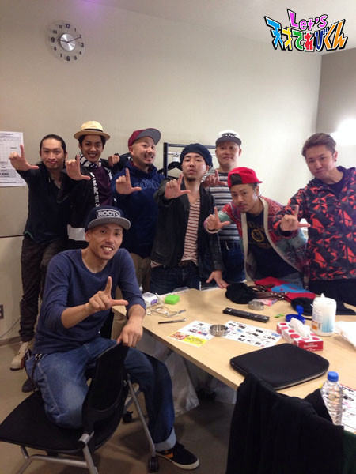

21世紀調査報告書その3［大野拓朗課長］
やあ、茶の間戦士諸君。
夏バテしてないか！？
私と会えないことに加え、夏の強烈な日差しの前には、
いくら優秀な茶の間戦士諸君といえどもへばってしまうことだろう。
これからまたどんどん暑くなるけど、
たくさん食べて、たくさんお水を飲んで、たくさん外で遊んで、
夏の太陽に打ち勝って行こうではないか！！
あ、たくさん食べると言えば。
みんなは好き嫌いとかしてないかな？
ピーマンとかニンジンとかシイタケとか。
私は好き嫌いなどせずになんでも食べていたぞ。………と言いたいところなのだが、
実は、小さい頃から、ハチミツだけは大の苦手だったんだ。
食べると気分が悪くなってしまっていた。
しかーーーーし！！！
この私にかかればハチミツくらいどうってことないのだ！！！！
喉（のど）に良いし、風邪も引きづらくなると聞いて、
頑張って食べていたら、今や私の大好物になった！！！！
どうだ？さすがだろう？わははははーーー
ここで1つ、君たちにも嫌いな食べ物を克服する方法を教えよう。
ピーマンやニンジン、シイタケにも、たっくさんの栄養があるのだ。
その栄養がないと、私みたいに身体が大きくなれないし、夏の太陽にも負けてしまう。
今、てれび戦士たちは、私たち未来人がいない中で、
異次元獣を倒そうと必死に頑張っている。
だから君たちも、好き嫌いせずになんでもたくさん食べて、
パワーをつけて、てれび戦士たちをサポートしてやってほしい。
君たちの力で、地球を異次元獣から救うのだ。
地球を守るためだと思えば、嫌いなものでも食べられるだろう？
茶の間戦士のみんな、よろしく頼んだぞ。
さて。
今日も、２０１４年にいる時に行った「Let'sの輪を広めよう」キャンペーンについて、
その結果を報告する。
まずは「週刊ヤングマガジン」という
日本で有名な、すごく面白い漫画雑誌の編集をしている、伊東さんだ。

この日は21世紀の正装、スーツというものを着てみたぞ！
伊東さんには、すごく可愛がってもらっていて、
いつも美味しいものを一緒に食べに行っているんだ。
どうだ、私のようにかっこいいだろう？
ん？
伊東さんは、かっこいいけど課長は別に？
………うるさい、うるさいっ！！！
さ、続いては、僕の大好きな21世紀のアーティスト、ET-KINGの皆さんだ。

22世紀でもリバイバルで大流行しており、
21世紀に来たときにご本人たちに会えて、
さらに仲良くしてもらえて、最高に幸せなんだ。
あったかくて、歌詞も素敵なので、みんなにもぜひ聞いてもらいたい。
お次は、この写真！！
おっと！間違えた！！！
いやあ、口紅異次元獣のときの、
口裂けメイクブームには、私も恥ずかしい思いをさせられたなあ。
あのときの虎南分析官や子どもたちの視線が怖かった………。
見せたかったのは、こっちの写真だ。

俳優の大貫勇輔くんだ。
俳優の大野拓朗という、私の仮の姿での活動において、仲良しであり良きライバルでもある。
今、ピーターパンというミュージカルで、フック船長をやっている。
クルクル回ったり踊ったりするおちゃめなフック船長、かっこよかったぞー。
ピーターパンは、22世紀でも子どもたちに広く親しまれている作品だ。
私も大好きで、小学生のとき風邪で学校を休んだ日には映画版を必ず観ていたほどだ。
ミュージカルのピーターパンも、感動したし、かっこよかったし、笑えたし、
すごく楽しく、素晴らしい世界だった。
東京での公演はもう終わってしまったが、地方での公演はまだあるみたいだ！
興味のある茶の間戦士諸君は、ぜひ調査に行ってみてくれ！！
最後に、私たちITAISENの活動を放送してくれている、NHK天てれチームの皆さんだ。

どちゃもんの情報を入手してきてくれたり、
異次元獣の脅威を報告してくれたり、
茶の間戦士諸君と私たちを繋いでくれたり、
重要な仕事をしてくださっている皆さんなんだ。
この人たちなくして地球を守ることはできない。
そしていつもいつも、私の優秀なところを
世界中に放送してくれていることに、感謝しているぞ。
(……それにしても、課長役立たずという声をよく聞くのはなぜだろう。。。)
とにかく！
私を21世紀の茶の間戦士諸君と出会わせてくれた皆さんに、感謝の気持ちでいっぱいだ。
さあ！茶の間戦士諸君。
改めて言うが、来たる異次元獣との決戦にそなえて、
たくさん食べて、パワーをつけておいてくれ！！！

行くぞ！フック！！！
って、ちがう！勇輔ちがう！！
Let'sだあ！！！！